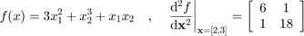

CODES / common / hess_fd
Hessian of f at x using finite difference
Contents
Syntax
- H=CODES.common.hess_fd(f,x) compute the Hessian matrix H using finite difference on f at x.
- [H,grad]=CODES.common.hess_fd(...) returns the central finite difference of the gradient grad.
- [H,grad,fx]=CODES.common.hess_fd(...) returns the function values fx of f at x.
- [...]=CODES.common.hess_fd(...,param,value) uses a list of parameters param and values value (c.f., parameter table).
Usage
size(x,1) must be equal to 1. Returns the (size(x,2) x size(x,2)) Hessian matrix.
Parameters
| param | value | Description |
|---|---|---|
| 'rel_diff' | positive numeric, {1e-5} | Finite difference step size. |
| 'fx' | numeric, { [ ] } | Function value at x f(x) (save one function evaluation). |
Example
Compute finite diffence for:

f=@(x)3*x(:,1).^2+x(:,2).^3+x(:,1)*x(:,2);
H=CODES.common.hess_fd(f,[2 3]);
CODES.common.disp_matrix(H,{'d2fdX12','d2fdX1X2'},...
{'d2fdX2X1','d2fdX22'})
d2fdX2X1 d2fdX22 d2fdX12 5.99982 1.00002 d2fdX1X2 1.00002 17.9995
See also
Copyright © 2015 Computational Optimal Design of Engineering Systems (CODES) Laboratory. University of Arizona.
|
|
Computational Optimal Design of Engineering Systems |

|